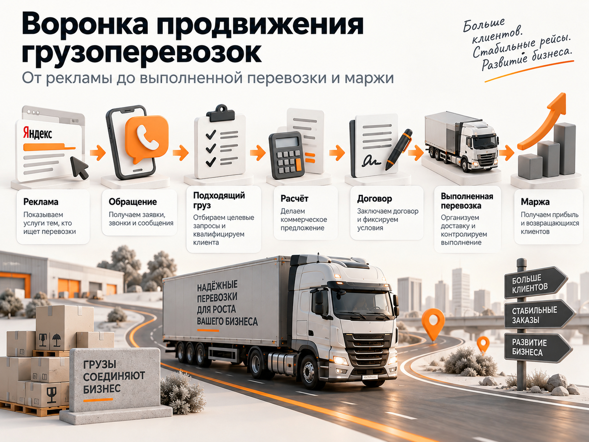
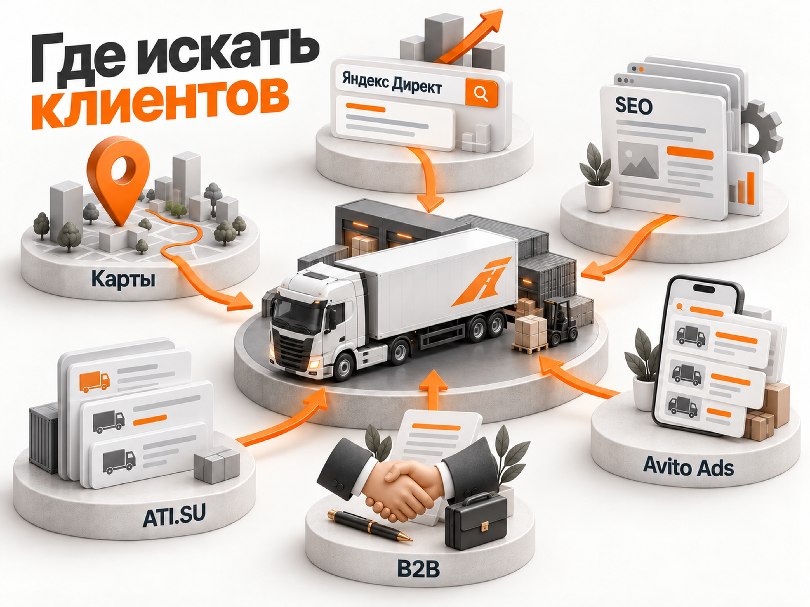
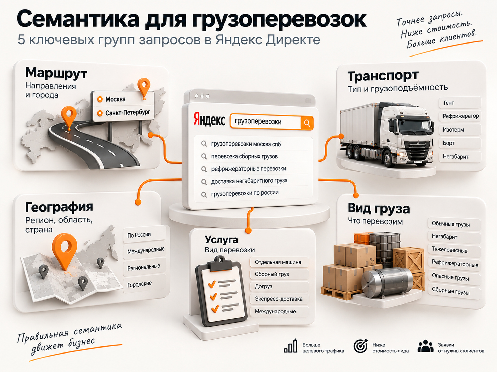
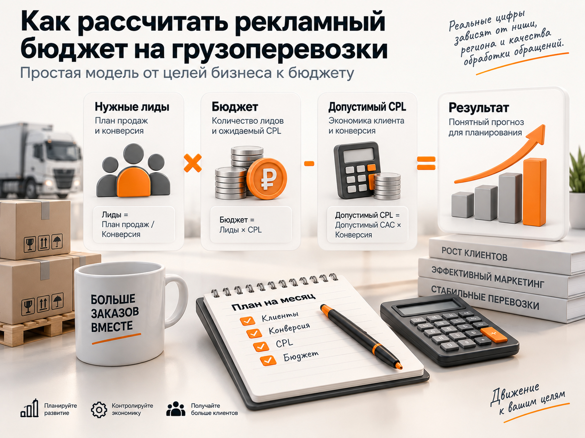

Блог о платном трафике
Продвижение грузоперевозок в 2026 году: анализ ниши и прогноз
Грузоперевозки - одна из самых сложных ниш для продвижения в Яндекс Директе. Особенно если речь идёт о междугородних и B2B-перевозках, а не о локальной Газели или квартирных переездах.
Причина не только в дорогом аукционе. Под словом «грузоперевозки» находится огромное количество разных услуг, клиентов и моделей бизнеса. Фура 20 тонн между регионами, сборный груз, негабарит, рефрижератор, доставка оборудования, международная логистика и перевозка по конкретному северному маршруту - это разные рекламные рынки.
Поэтому универсального ответа на вопрос «сколько стоит лид в грузоперевозках» нет.
В открытых кейсах можно найти стоимость обращения и 1000 ₽, и 5000 ₽, и значительно выше. Но сравнивать эти цифры без понимания того, что именно автор назвал лидом, нельзя.
Для нормального прогноза я бы смотрел на четыре вещи:
- какой сегмент грузоперевозок продвигается;
- насколько конкурентна конкретная семантика;
- что именно считается лидом;
- какая часть обращений превращается в реальную перевозку.
Дальше уже можно оценивать бюджет и решать, имеет ли смысл масштабировать Яндекс Директ.
Главное за минуту
- Универсального CPL в грузоперевозках нет: разные услуги и маршруты имеют разную экономику.
- Для сформированного спроса в первую очередь стоит проверять Поиск Яндекс Директа.
- B2B и B2C лучше разделять, если компания работает с обоими сегментами.
- Узкие и маршрутные запросы часто точнее общих запросов.
- Бюджет нужно рассчитывать от конкретной семантики, конверсии и экономики сделки, а не от «средней цены лида по рынку».
Что происходит на рынке грузоперевозок в России в 2026 году
Сам рынок автомобильных грузоперевозок сейчас находится в довольно нестабильном состоянии.
31 августа 2026 года Индекс ATI.SU по 100 популярным направлениям достиг исторического максимума в 2281 пункт. С конца мая показатель вырос более чем на 30%, с начала года - на 33%. В начале сентября рост продолжился: за неделю индекс прибавлял более 5%.
Сам Индекс ATI.SU не показывает цену рейса в рублях. Это относительный показатель изменения ставок. Он рассчитывается на основе ставок участников биржи и параметров сделок. Базовые данные относятся к полностью загруженным автомобилям 20 тонн и 82 м³.
При этом рост тарифов не означает аналогичного роста объёма грузов. По данным M.A. Research, которые приводит ATI.SU, в 2026 году грузооборот автомобильного транспорта вырос примерно на 1%, а физический тоннаж перевозимых грузов снизился на 3-4%.
Получается довольно сложная ситуация: ставки перевозчиков растут, а сам рынок грузов не растёт такими же темпами.
Для рекламодателя это означает, что нельзя оценивать рекламу отдельно от экономики рейса.
Сегодня компания может активно продвигать определённое направление и получать хорошую маржу. Через несколько месяцев выросшие расходы на топливо, нехватка транспорта или изменение ставок могут сделать тот же маршрут значительно менее привлекательным.
Поэтому правильная воронка для транспортной компании выглядит так:

Сезонность в грузоперевозках тоже влияет на рекламу
Спрос и ставки по грузоперевозкам меняются в течение года.
Яндекс отдельно рекомендует учитывать сезонность при продвижении транспортных услуг и корректировать рекламные бюджеты по направлениям в зависимости от спроса.
На практике сезонность здесь состоит сразу из нескольких факторов.
Есть общий рост деловой активности, строительный сезон, сельскохозяйственные перевозки, подготовка бизнеса к осени и зиме, предновогодняя логистика.
Но кроме обычной сезонности на рынок накладываются разовые факторы. Например, летом 2026 года ставки автомобильных перевозок в Южном федеральном округе резко выросли. По данным ATI.SU, летом они были на 65,5% выше, чем годом ранее. Среди причин назывались проблемы с топливом, дефицит машин и перестройка логистических цепочек.
Поэтому рекламную статистику грузоперевозок я бы сравнивал не только месяц к месяцу, но и год к году.
Если CPL вырос в сентябре относительно июля, это ещё не обязательно означает, что рекламу стали вести хуже.
Мог измениться сам спрос, конкуренция в Директе или экономика перевозчиков.
Какие грузоперевозки нужно продвигать отдельно
Одна из главных ошибок при прогнозировании - воспринимать «грузоперевозки» как одну услугу.
Даже внутри автомобильной логистики можно выделить разные сегменты.
FTL - отдельная машина
Клиенту нужен полностью автомобиль под его груз.
Часто это B2B, относительно высокий чек и понятный маршрут.
Запросы могут содержать тоннаж, тип автомобиля, точки отправления и назначения.
Сборные грузы и догруз
У клиента меньше объём, и отдельная машина экономически не нужна.
Здесь другая конкуренция и другая экономика заказа.
Негабарит и тяжеловесные грузы
Более узкий сегмент.
Запросов меньше, но и компаний, способных реально выполнить такую перевозку, меньше.
Рефрижераторные перевозки
Отдельная потребность, отдельный парк техники и отдельные требования клиента.
Международные грузоперевозки
Здесь добавляются таможня, документы, международные маршруты, сроки и дополнительные риски.
Узкие направления
Например, доставка грузов в Норильск, на Чукотку или по другим сложным направлениям.
Частотность ниже, зато запрос намного точнее и конкурентов может быть значительно меньше.
Именно поэтому один «средний CPL грузоперевозок» почти ничего не говорит о конкретном бизнесе.
B2B и B2C лучше разделять
Ещё одна важная граница - тип клиента.
Человек, которому нужно перевезти диван, и завод, которому еженедельно нужны несколько фур, оба могут ввести в Яндексе запрос со словом «грузоперевозки».
Но это совершенно разная экономика.
Для B2B важны договор, документы, НДС, отсрочка платежа, стабильность перевозчика, возможность регулярно предоставлять нужный транспорт, страхование и скорость расчёта ставки.
Яндекс также отдельно выделяет корпоративную аудиторию грузоперевозок и рекомендует учитывать документацию, условия оплаты, географию, тип перевозки и удобство взаимодействия.
Поэтому если транспортная компания работает в основном с бизнесом, я бы старался фильтровать частный спрос уже на уровне рекламы.
Где транспортной компании искать клиентов
Транспортной компании обычно не нужен один универсальный канал. Разные источники закрывают разные типы спроса: от человека, который уже ищет перевозчика, до корпоративного заказчика с регулярной потребностью.
Я бы рассматривал основные каналы так:
| Канал | Когда подходит | Основная задача |
|---|---|---|
| Яндекс Директ | Есть сформированный поисковый спрос | Быстро получать обращения по конкретным услугам и маршрутам |
| SEO | Есть стабильный поисковый спрос | Получать органический трафик по услугам, маршрутам и типам грузов |
| Яндекс Карты | Важен локальный или региональный спрос | Получать обращения из геопоиска |
| ATI.SU и транспортные биржи | Компания активно работает с направлениями и загрузкой транспорта | Искать грузы и анализировать отраслевой спрос |
| Avito Ads | Есть спрос на услуги в конкретных регионах и сегментах | Получать дополнительные обращения и тестировать отдельный рекламный канал |
| Тендеры и прямые B2B-продажи | Компания работает с корпоративными заказчиками | Искать крупные и регулярные контракты |
Avito Ads для грузоперевозок имеет смысл рассматривать как отдельный источник трафика. Особенно полезно тестировать его по конкретным регионам, типам перевозок и услугам, а результат оценивать не по количеству обращений, а по доле подходящих заявок и реальных заказов.
При этом Директ, SEO, Карты, ATI.SU, Avito Ads и прямые B2B-продажи не заменяют друг друга. Они работают с разным спросом, поэтому сильная система продвижения обычно строится из нескольких каналов.

Яндекс Директ для грузоперевозок
Почему начинать стоит с Поиска
Для большинства транспортных компаний Поиск Яндекс Директа я бы рассматривал первым.
Причина простая: пользователь сам сообщает, что ему сейчас нужна перевозка.
Запрос «фура 20 тонн Москва Екатеринбург» намного ближе к покупке, чем просто принадлежность пользователя к аудитории предпринимателей или логистов.
Сам Яндекс также относит Директ к основным инструментам продвижения грузоперевозок и рекомендует разделять запросы по направлениям.
Но именно высокий коммерческий интент одновременно создаёт главную проблему - за таких пользователей конкурирует много рекламодателей.
Как работает аукцион
Фиксированной цены клика в Директе нет.
Аукцион происходит при каждом показе. На результат влияют ставки рекламодателей, прогнозируемая кликабельность и качество объявления.
Поэтому вопрос «Сколько стоит клик в грузоперевозках?» без конкретной семантики почти бессмысленный.
По широкому запросу могут одновременно рекламироваться десятки крупных компаний.
По узкому маршруту или специальной перевозке участников будет значительно меньше.
Именно из-за этого я не стал бы пытаться любой ценой получать максимальный объём трафика по самым общим фразам.
Важнее стоимость конечного результата.
Общие запросы
К этой группе относятся:
- грузоперевозки;
- грузоперевозки по России;
- транспортная компания;
- междугородние грузоперевозки;
- доставка грузов по России.
У них большой объём спроса.
Но пользователь сообщает мало информации о своей задаче.
Одновременно здесь находится максимальное количество конкурентов.
Для крупной транспортной компании такие запросы могут быть необходимы для масштабирования. Но я бы не начинал прогноз только с них.
Узкие запросы
Узкое направление не означает дорогой трафик.
Часто всё наоборот.
Например, «грузоперевозки по России» и «перевозка спецтехники Москва Норильск» относятся к одной отрасли, но аукцион у них совершенно разный.
Во втором случае часть транспортных компаний просто не может выполнить заказ. Значит, они либо не рекламируются по такому запросу, либо быстро отключают направление.
Узкая семантика способна дать:
- меньше конкурентов;
- более точный запрос;
- более высокую релевантность объявления;
- более подходящую посадочную страницу;
- меньше нецелевых заявок.
Основное ограничение другое - объём.
Можно получать хорошие обращения, но самих запросов будет мало.
Маршрутные запросы
Для грузоперевозок запросы с направлениями часто представляют большую ценность.
Например, «грузоперевозки Москва Казань», «фура Москва Краснодар», «доставка груза Екатеринбург Москва» и «грузоперевозки Новосибирск Омск».
Это уже не просто интерес к услуге. Пользователь сообщает часть параметров заказа.
Но есть важный нюанс геотаргетинга.
Если клиент ищет грузоперевозку Самара - Москва, он сам физически может находиться где угодно.
Например, логист головного офиса находится в Санкт-Петербурге и организует перевозку между Самарой и Москвой.
Поэтому географию запроса и регион нахождения пользователя нельзя путать. Яндекс также отдельно обращает внимание на эту особенность при рекламе грузоперевозок.
Как разделять семантику
Структура зависит от конкретной компании, но я бы как минимум рассматривал несколько слоёв.
Общий сформированный спрос
Грузоперевозки, транспортная компания, перевозка грузов.
География
Города отправления, назначения и направления.
Транспорт
Газель, пятитонник, десятитонник, фура 20 тонн, трал, рефрижератор.
Тип услуги
Отдельная машина, сборный груз, догруз, регулярные перевозки, негабарит.
Вид груза
Оборудование, стройматериалы, техника, продукты и другие категории, если компания на них специализируется.
Такую структуру проще анализировать.
Можно увидеть, например, что общие фразы дают много трафика, но мало нормальных заявок, а маршрутные запросы дают меньше лидов, но лучше проходят квалификацию.
Для B2B-рекламы в целом я использую похожий принцип сегментации. Подробнее этот принцип разобран в статье о продвижении B2B.

Какие запросы нужно отсекать
В грузоперевозках не стоит копировать универсальный список минус-слов. Сначала нужно понимать, какие услуги реально оказывает компания, а затем регулярно смотреть фактические поисковые запросы.
В зависимости от бизнеса чаще всего стоит проверять и при необходимости исключать спрос, связанный с:
- вакансиями и поиском работы водителем;
- обучением;
- покупкой транспорта;
- арендой транспорта, если компания её не предоставляет;
- переездами, если рекламируются только B2B-перевозки;
- частными заказами, если компания работает только с юридическими лицами.
Окончательное решение нужно принимать по реальным поисковым запросам кампании. Подробнее об этом - в статье про минус-фразы в Яндекс Директе.
Не дробить рекламу на сотни микрокампаний
Сегментация полезна, но её легко довести до абсурда.
Если сделать отдельную кампанию на каждый маршрут, тоннаж и груз, можно получить десятки кампаний, в каждой из которых будет несколько конверсий в месяц.
Для автоматических стратегий это проблема.
Им нужны данные.
Поэтому я бы разделял только те сегменты, которые действительно требуют разного бюджета, объявления, посадочной страницы или анализа эффективности.
Остальное можно объединять внутри более крупных кампаний.
Какие цели использовать для автостратегий
Это особенно важно в грузоперевозках.
Допустим, на сайте настроены цели:
- нажал телефон;
- открыл калькулятор;
- написал в чат;
- отправил форму;
- просмотрел несколько страниц.
Если использовать их как равнозначные конверсии, рекламная система будет искать пользователей, которые легче всего выполняют эти действия.
Но «нажал телефон» ещё не означает заказ перевозки.
Для автоматического обучения намного полезнее передавать более глубокие цели.
Яндекс позволяет передавать в Метрику и Директ звонки и заявки, которые уже были проверены менеджером, то есть квалифицированные лиды.
Подробнее о такой схеме можно прочитать в материале об офлайн-конверсиях.
Что считать лидом в грузоперевозках
Это один из самых важных вопросов всей статьи.
В разных кейсах под CPL скрываются совершенно разные события.
Лидом могут назвать:
- отправленную форму;
- уникальный звонок;
- любое обращение в чат;
- нажатие кнопки;
- заявку после разговора с менеджером;
- квалифицированный запрос с подходящим маршрутом и грузом.
Поэтому две цифры CPL нельзя сравнивать, пока не понятно определение лида.
Я бы разделял минимум три уровня.
Форма - пользователь отправил заявку на сайте.
Обращение - уникальная форма или звонок.
Квалифицированный лид - менеджер подтвердил, что это потенциальный клиент, который соответствует условиям компании.
Дальше идут расчёт, договор и перевозка.
Реальные кейсы с CPL от 3000 ₽
Для прогноза я специально не беру кейсы, где заявлены лиды дешевле 3000 ₽.
Это не означает, что такой результат невозможен. Но именно в грузоперевозках слишком часто под дешёвым CPL скрываются очень широкие цели или непонятная методика учёта.
Ниже несколько результатов, которые выглядят полезнее для ориентирования.
| Проект | Что считалось результатом | Результат |
|---|---|---|
| Карго из Китая | квалифицированный лид | 3500 ₽ |
| Складская логистика | квалифицированный лид | 3333 ₽ |
| Грузоперевозки в Норильск, мой кейс | отправленная форма, без звонков | 3684 ₽ |
| Авиаперевозки грузов TLS Group | заявка | 5000 ₽ после оптимизации |
Карго из Китая - 3500 ₽ за квалифицированный лид
В кейсе 2025 года для карго-бизнеса стоимость квалифицированного лида в Яндекс Директе была доведена до 3500 ₽.
В проекте использовали узкую поисковую семантику, отдельные аудитории, новые посадочные страницы и передачу данных между маркетингом и продажами.
При этом допустимый CPO в проекте составлял до 10 000 ₽, поэтому сама компания оценивала результат не изолированно по CPL, а через экономику бизнеса.
Складская логистика - 3333 ₽ за квалифицированный лид
В другом кейсе рекламировались услуги складской логистики.
Рекламный бюджет составлял 350 000 ₽ в месяц.
Количество квалифицированных лидов увеличили с 74 до 105, а их стоимость снизили с 4730 до 3333 ₽.
Это смежный сегмент логистики, а не обычные междугородние перевозки, поэтому переносить его CPL напрямую на транспортную компанию нельзя.
Но кейс хорошо показывает порядок цифр именно по квалифицированным B2B-обращениям.
Мой кейс грузоперевозок в Норильск - 3684 ₽ за форму
У меня тоже был проект по грузоперевозкам, но с очень узкой географией - перевозки в Норильск.
Стоимость лида удалось снизить с 11 090 до 3684 ₽.
Здесь принципиальное уточнение: 3684 ₽ - это стоимость только отправленной формы на сайте. Звонки в этот показатель вообще не входили.
То есть фактических обращений в проекте было больше, но отдельно корректно пересчитать общий CPL с учётом телефонных обращений по имеющимся данным нельзя.
Поэтому этот результат нельзя напрямую сравнивать с кейсом, где CPL считается как сумма форм и звонков.
Сам кейс: грузоперевозки в Норильск
Авиаперевозки грузов - 5000 ₽ за заявку
В опубликованном портфолио специалиста по контекстной рекламе описан проект TLS Group по авиаперевозкам грузов.
После полной перестройки рекламной системы, семантики и аналитики стоимость заявки за два месяца была снижена с 12 000 до 5000 ₽.
Это описание проекта самим специалистом, а не независимое исследование, поэтому я рассматриваю его только как ещё один ориентир, а не как доказательство «среднего CPL».
Какой вывод можно сделать из кейсов
Я бы не превращал даже эти четыре результата в среднее арифметическое.
Услуги разные.
Методика подсчёта разная.
География разная.
Где-то считается квалифицированный лид, где-то первичная форма.
Поэтому вывод другой: несколько тысяч рублей за нормальное B2B-обращение в грузоперевозках выглядит реалистичным порядком цифр, но прогнозировать конкретный CPL без семантики и теста нельзя.
Именно поэтому я бы не обещал перед запуском ни 3000, ни 5000 ₽.
Это ориентиры из реальных проектов, а не норматив.
Как оценивать качество обращений
Допустим, один источник даёт 50 заявок.
Другой - 30.
Если смотреть только на количество лидов, первый выглядит лучше.
Но после разговора с менеджерами может оказаться, что из 50 подходят 10, а из 30 подходят 20.
Тогда вывод меняется полностью.
Для грузоперевозок типичные причины нецелевого лида:
- слишком маленький груз;
- неподходящий маршрут;
- физическое лицо вместо B2B;
- нет нужного транспорта;
- нужен переезд;
- слишком маленький бюджет;
- компания не работает с таким типом груза;
- требуется услуга, которой нет.
Поэтому я бы обязательно фиксировал причину отказа в CRM.
Иначе реклама получает обратную связь только в формате «лид был», хотя бизнесу этот лид не нужен.
Объявление может отсеивать клиента ещё до перехода
При высокой конкуренции это особенно полезно.
Если компания работает только с юридическими лицами, это можно прямо указать.
Если перевозки начинаются от определённого тоннажа - тоже.
То же самое касается:
- НДС;
- минимального расстояния;
- минимального веса;
- отдельной машины;
- конкретного типа транспорта;
- регионов работы.
Часть пользователей не кликнет.
И это хорошо.
Вы экономите деньги на заведомо неподходящих посетителях.
Скорость расчёта ставки влияет на результат рекламы
В B2B-грузоперевозках маркетинг заканчивается далеко не на форме.
Клиент часто отправляет запрос сразу нескольким транспортным компаниям.
Если одна компания отвечает через 15 минут, а другая считает маршрут два дня, рекламные показатели второй могут выглядеть нормально, но продаж будет мало.
Поэтому я бы обязательно измерял время от заявки до первого контакта, время до предварительного расчёта и время до отправки коммерческого предложения.
В отраслевых материалах по маркетингу грузоперевозок скорость расчёта также отмечается как одна из ключевых точек конкуренции за B2B-заказчика.
Каким должен быть сайт транспортной компании
При дорогом трафике слабый сайт особенно болезнен.
Пользователь должен очень быстро понять:
- возите ли вы нужный груз;
- работаете ли по нужному маршруту;
- есть ли подходящий автомобиль;
- работаете ли с его типом клиента;
- как получить стоимость перевозки.
Универсальный первый экран «Надёжные грузоперевозки по всей России» почти ничего не сообщает.
Гораздо полезнее конкретика.
Например, вместо общего сообщения можно указать: «Междугородние перевозки отдельными машинами от 5 тонн для юридических лиц». Для другого сегмента подойдёт: «Перевозка негабаритного оборудования по России с расчётом маршрута».
Конкретная формулировка сразу фильтрует аудиторию.
Подробнее о выборе посадочной страницы для Директа рассказано в материале о посадочных страницах.
Что должно быть на посадочной странице
Посадочная страница должна быстро отвечать на вопросы, которые влияют на решение клиента и одновременно помогают отсеять неподходящий спрос. Я бы проверил минимум следующие элементы:
- Какие перевозки выполняет компания.
- По каким направлениям она работает.
- Какие типы транспорта доступны.
- Есть ли ограничения по весу, объёму, тоннажу или минимальному заказу.
- Работает ли компания с физическими лицами или только с бизнесом.
- Какие условия по НДС, документам и страхованию применяются, если это важно для услуги.
- Как быстро можно получить расчёт.
- Какие данные нужны для расчёта перевозки.
- Как отправить заявку или связаться с менеджером.
- Какие реальные доказательства опыта и работы компании можно показать.
Не нужно искусственно заполнять страницу всеми пунктами. На ней должна быть только та конкретика, которая действительно относится к услуге и условиям компании.
Отдельные страницы под направления могут повышать релевантность
Если у компании несколько больших самостоятельных услуг, вести весь трафик на одну страницу необязательно.
Например:
- перевозка негабарита;
- рефрижераторные перевозки;
- грузоперевозки фурами;
- сборные грузы;
- доставка оборудования;
- отдельные крупные направления.
Человек по запросу «перевозка негабарита» должен сразу попасть на страницу про негабарит.
Это полезно одновременно и для рекламы, и для SEO.
Нужен ли калькулятор
Да, если он действительно помогает получить исходные параметры.
Но я бы не пытался автоматически обещать пользователю точную цену, если она зависит от десятка условий.
Калькулятор может работать как форма квалификации.
Например, собрать:
- откуда;
- куда;
- груз;
- вес;
- объём;
- тип машины;
- дату.
После этого пользователь оставляет контакт и получает расчёт.
Это намного полезнее формы «Имя + телефон», особенно когда менеджеру всё равно придётся выяснять все параметры заказа.
Аналитика и экономика грузоперевозок
Звонки обязательно нужно учитывать
Для грузоперевозок это критично.
Часть клиентов предпочитает не заполнять форму, а сразу звонить.
Если рекламодатель считает только формы, он видит неполную картину.
Мой кейс Норильска как раз хороший пример: опубликованный CPL 3684 ₽ относится только к отправленным формам, звонки туда не включались.
Если звонков было много, фактическая стоимость одного обращения была ниже.
Поэтому для новой кампании я бы обязательно подключал коллтрекинг.
CRM нужна не ради CRM
Главная задача CRM в рекламе - вернуть маркетингу информацию о качестве.
В рекламном кабинете видно: пришёл лид.
В CRM должно быть видно:
- подходит ли груз;
- сделан ли расчёт;
- отправлено ли предложение;
- заключён ли договор;
- состоялась ли перевозка.
Только тогда можно понять, какие кампании реально зарабатывают деньги.
Повторные перевозки сильно меняют экономику
Это ещё одна причина не судить рекламный канал только по CPL.
Один новый клиент может заказать одну перевозку.
Другой может начать отправлять по несколько машин в месяц.
Стоимость первого привлечения у них одинаковая.
Ценность для бизнеса совершенно разная.
Поэтому для B2B я бы постепенно переходил от CPL к CAC и LTV.
Считать нужно не только стоимость заявки, но и стоимость нового клиента и маржу, которую он принёс за несколько месяцев.
Как рассчитать рекламный бюджет до запуска
Я бы не начинал расчёт с придуманного CPL.
Сначала собирается семантика конкретного бизнеса.
Затем она проверяется через инструмент «Прогноз бюджета» Яндекс Директа.
Он позволяет оценить количество запросов, кликов, ставки и расходы для выбранных фраз и региона. Яндекс отдельно предупреждает, что это прогноз, а реальные показатели будут меняться в зависимости от аукциона и качества рекламы.
Подробнее про этот этап - в материале о прогнозе бюджета.
После этого можно решить, хватает ли бюджета хотя бы на нормальный тест.
А настоящий CPL появляется уже после запуска.
Для предварительного расчёта полезно идти от нужного бизнес-результата назад. Простая модель выглядит так:
- Нужные лиды = план продаж / конверсия лида в продажу.
- Бюджет = нужные лиды × ожидаемый CPL.
- Допустимый CPL = допустимый CAC × конверсия лида в продажу.
Это расчётная модель, а не средние показатели рынка. Подставлять в неё имеет смысл собственные данные бизнеса или осторожные рабочие допущения, которые потом проверяются рекламным тестом.

Калькулятор рекламного бюджета
Укажите, сколько новых клиентов нужно в месяц, примерную конверсию лида в клиента и стоимость лида. Калькулятор сразу покажет, сколько обращений потребуется и какой рекламный бюджет для этого нужен.
Расчёт ориентировочный. Реальные показатели зависят от услуги, региона, спроса, конкуренции, сайта и качества обработки обращений.
Нужно обращений:
Ориентировочный рекламный бюджет:
Какой бюджет нужен для теста
Единой минимальной суммы здесь тоже нет.
Если компания работает по одному узкому направлению, объём спроса может быть маленьким и огромный бюджет просто некуда потратить.
Если рекламируется федеральная транспортная компания по широкому набору услуг, небольшой бюджет даст слишком мало данных.
Поэтому тестовый бюджет должен отвечать не правилу «100 тысяч всем», а объёму конкретной семантики.
Я смотрел бы на:
- прогноз доступных кликов;
- ожидаемый расход;
- число сегментов;
- географию;
- исторические данные, если они есть.
Основная задача первого периода - получить достаточно данных, чтобы отделить рабочие направления от слабых.
Другие каналы продвижения
РСЯ для грузоперевозок
Я бы не делал холодную РСЯ основой прогноза.
Поиск имеет большое преимущество: пользователь прямо сейчас формулирует потребность.
В РСЯ мы пытаемся определить потенциального клиента по косвенным признакам.
Для логистики это сложнее.
РСЯ имеет смысл тестировать для:
- ретаргетинга;
- собственных аудиторий;
- посетителей конкретных страниц;
- дополнительных B2B-сегментов;
- расширения уже работающей рекламы.
Но сравнивать Поиск и РСЯ нужно не по CPC.
Дешёвый клик из сети может привести много мусора.
Подробнее о сравнении Поиска и РСЯ - в материале о Поиске и РСЯ.
Мастер кампаний тоже стоит тестировать отдельно
Мастер кампаний может находить дополнительный спрос, но в такой неоднородной нише автоматике особенно важны правильные цели.
Если оптимизироваться на любые заявки, алгоритм может искать самые лёгкие конверсии.
А самые лёгкие далеко не всегда самые полезные.
Поэтому я бы сначала добился понятной аналитики, а потом тестировал автоматические кампании отдельной гипотезой.
SEO особенно хорошо подходит для узких запросов
Контекстная реклама позволяет быстро получить трафик, но за каждый переход приходится платить.
SEO работает медленнее, зато хорошо подходит для большого хвоста запросов.
У транспортной компании могут быть отдельные страницы под:
- маршруты;
- типы транспорта;
- виды грузов;
- негабарит;
- рефрижераторы;
- сборные грузы;
- международные направления.
Не нужно делать сотни автоматически сгенерированных страниц «город А - город Б».
Страница должна действительно отвечать на задачу пользователя.
Но там, где есть стабильный спрос и реальная услуга, SEO может постепенно снижать зависимость компании от дорогого аукциона Директа.
Яндекс Карты и геосервисы
Для локальных и региональных перевозок Карты тоже могут быть отдельным источником клиентов.
Особенно когда человек ищет транспортную компанию рядом с собой.
Для федеральной B2B-логистики роль геосервисов обычно меньше, чем у Поиска, но полностью игнорировать карточку компании я бы не стал.
ATI.SU и транспортные биржи
Биржи дают другой тип спроса.
На ATI.SU можно одновременно искать грузы и анализировать ситуацию на конкретных направлениях.
Сервис предоставляет данные по средним ставкам почти по 3000 маршрутам и разным тоннажам, а также динамику количества грузов.
Для маркетинга эти данные полезно использовать ещё до запуска рекламы.
Если по определённому направлению падают ставки и слишком много свободного транспорта, возможно, агрессивно привлекать дополнительный спрос именно туда сейчас невыгодно.
Avito Ads для грузоперевозок
Avito Ads стоит рассматривать как самостоятельный рекламный канал, особенно когда транспортная компания работает в понятных регионах и может разделить объявления по конкретным услугам. В грузоперевозках такой трафик может дополнять Поиск Яндекс Директа и давать дополнительные обращения.
Я бы оценивал его так же, как другие каналы: не только по цене обращения, но и по доле подходящих грузов, квалифицированных лидов и реальных перевозок. Кампании по разным услугам и регионам лучше анализировать отдельно, чтобы не смешивать спрос с разной экономикой.
Что я бы проверил до запуска рекламы
Перед запуском мне нужны ответы на несколько вопросов.
- Какой минимальный заказ выгоден?
- Какие типы грузов нужны?
- Какие направления приоритетны?
- Какие машины доступны?
- Работает ли компания с физическими лицами?
- Как быстро рассчитывается ставка?
- Какой процент обращений обычно заканчивается перевозкой?
- Какая средняя маржа с нового клиента?
- Есть ли повторные перевозки?
Если этих данных нет, реклама всё равно может работать. Но оптимизировать её намного сложнее.
Основные ошибки продвижения грузоперевозок
- Рекламировать всё одной кучей. Фуры, сборные грузы и негабарит имеют разный спрос.
- Ориентироваться только на общий CPL. Форма и квалифицированный B2B-запрос - разные вещи.
- Не учитывать звонки. Часть результата рекламы просто исчезает из отчёта.
- Использовать только широкие запросы. Компания постоянно находится в самом плотном аукционе.
- Игнорировать узкие маршруты. Именно они могут дать наиболее точный спрос.
- Путать географию пользователя с маршрутом перевозки. Клиент не обязан находиться в точке отправления груза.
- Вести весь трафик на общий сайт. Релевантность падает, особенно для специальных перевозок.
- Долго обрабатывать заявки. Пока менеджер считает, клиент получает предложение конкурента.
- Не передавать продажи обратно в аналитику. Рекламная система продолжает учиться на любых формах.
Пошаговый план продвижения грузоперевозок
- Определить прибыльные услуги и направления.
- Разделить B2B и B2C, если компания работает с обоими сегментами.
- Собрать семантику по общим запросам, маршрутам, транспорту, грузам и услугам.
- Проверить объём спроса и аукцион.
- Подготовить релевантные посадочные страницы.
- Подключить Метрику, формы и коллтрекинг.
- Настроить передачу лидов в CRM.
- Запустить Поиск по наиболее сформированному спросу.
- Регулярно анализировать реальные поисковые запросы.
- Размечать причины нецелевых лидов.
- Передавать квалификацию и продажи обратно в аналитику.
- После накопления данных масштабировать прибыльные направления.
- Отдельно тестировать РСЯ и автоматические кампании.
- Параллельно развивать SEO под услуги и маршруты.
Какого результата ждать от продвижения грузоперевозок в 2026 году
Яндекс Директ подходит для этой ниши, потому что позволяет работать с уже сформированным спросом.
Но ожидать одну универсальную стоимость заявки неправильно.
По широким запросам конкуренция очень высокая.
По узким маршрутам и специальным перевозкам она может быть намного ниже.
В рассмотренных кейсах, которые я считаю достаточно показательными и где CPL выше 3000 ₽, встречаются результаты:
- 3333 ₽ за квалифицированный лид в складской логистике;
- 3500 ₽ за квалифицированный лид в карго из Китая;
- 3684 ₽ за отправленную форму в моём кейсе грузоперевозок в Норильск, без учёта звонков;
- 5000 ₽ за заявку в проекте по авиаперевозкам после снижения с 12 000 ₽.
Но даже эти значения не являются «средней ценой лида по грузоперевозкам».
Правильный прогноз строится по конкретной услуге.
Сначала анализируется спрос и аукцион. Потом запускается тест. После него уже появляются реальные CPC, CPL, стоимость квалифицированного лида и конверсия в договор.
И только эти собственные данные позволяют понять, сколько денег действительно стоит вкладывать в продвижение грузоперевозок.